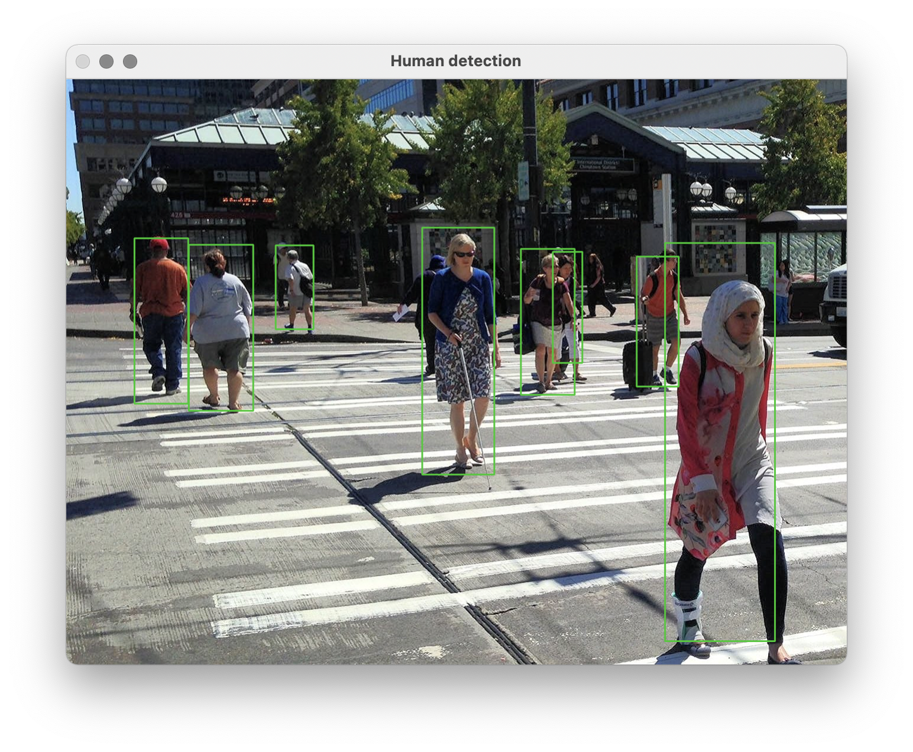

Iya. Dengan deep learning dan OpenCV. Saya mengasumsikan kamu familiar atau pernah dengar keduanya. Kalau tidak, tidak apa-apa. Silakan ikuti saja. Kita akan menggunakan bahasa pemrograman python.
Diberikan input berupa suatu gambar. Kita diminta mendeteksi dan menandai area-area yang di dalamnya terdapat objek manusia.

Saya random saja pinjam gambar dari sini.
Detector kita berbasis model deep learning. Lebih spesifiknya, kita akan menggunakan model dengan arsitektur MobileNet, yaitu deep neural network yang relatif ringan namun cukup akurat. Sesuai namanya, model ini didesain Google untuk digunakan di perangkat mobile.
Buka editor teks-mu, pastikan OpenCV dengan versi >= 3.1. sudah terpasang. Sejak versi 3.1., OpenCV memungkinkan kita untuk menggunakan deep learning untuk mengolah citra. Ini berarti, siapapun semakin mudah mengakses model terkini.
Pertama, import OpenCV, kemudian inisialisasi modelnya sebagai berikut.
import cv2
model = cv2.dnn.readNetFromTensorflow('frozen_inference_graph.pb',
'ssd_mobilenet_v1_ppn_coco.pbtxt')
Kode di atas berarti kita akan membuat model MobileNet yang bobot-bobotnya sudah optimal. Artinya, sudah ada orang baik di komunitas computer vision yang melatih modelnya. Artinya, kita tinggal pakai saja. Untuk eksperimen ini, model yang akan digunakan dibuat dengan Tensorflow. Karena itu kita memanggil fungsi readNetFromTensorflow.
Bobot-bobot dan konfigurasi model yang dibuat dengan tensorflow akan disimpan dalam file *.pb dan *.pbtxt. Untuk MobileNet sendiri kita harus punya file frozen_inference_graph.pb (berisi seonggok bobot yang sudah optimal) serta ssd_mobilenet_v1_ppn_coco.pbtxt (yang berisi konfigurasi MobileNet). Keduanya bisa diperoleh dari tautan ini (saya menggunakan MobileNet-SSD v1 PPN). Kedua file itu saja yang kita butuhkan.
(Sebetulnya kita bisa saja menggunakan model yang dilatih dengan framework lain, seperti caffe atau darknet, tapi cara memuat bobot-bobotnya akan sedikit berbeda. Jadi, gk dulu.)
Kemudian kita bisa load gambar uji coba. Silakan sediakan sendiri gambar yang berisi sekumpulan manusia. Bebas. Simpan dengan nama "people.jpg", atau apapun, silakan sesuaikan. Standar saja, seperti biasanya kita load gambar dengan OpenCV. Jangan lupa tampung ukurannya di variabel W (width) dan H (height).
image = cv2.imread('people.jpg') # sesuaikan nama file-nya
W = image.shape[1]
H = image.shape[0]
Sebagai catatan, cv2.imread() secara default akan mengembalikan image dalam bentuk array 3D (numpy.ndarray) dengan ukuran (W, H, C), di mana C adalah jumlah channel warna, dan C=3. Kenapa 3? Karena ada 3 channel warna, RGB 🤷🏻♂️.
Gambar sudah dimuat. Sekarang kita bisa melakukan pendeteksian, dengan alur sebagai berikut.
blob = cv2.dnn.blobFromImage(image,
size=(300, 300),
mean=(127.5, 127.5, 127.5),
swapRB=True)
model.setInput(blob)
output = model.forward()
Model tidak bisa langsung menggunakan image sebagai input. Kita harus mengonversi image menjadi blob. Entah kenapa demikian 🤷🏻♂️.
Mudahnya, anggaplah blob sebagai image yang sudah di-preprocess, dengan cara di-resize ke ukuran (300, 300), dinormalisasi tiap-tiap channel-nya dengan mean (127.5, 127.5, 127.5), dan diubah susunan channel-nya dari RGB menjadi BGR (iya, MobileNet di OpenCV butuh input BGR).
Setelah itu, kita perintahkan model untuk menggunakan blob sebagai input melalui model.setInput(blob). Untuk mendapatkan output, kita perintahkan model untuk melakukan forward propagation, model.forward().
Variabel output adalah array 4D dengan ukuran (1, 1, 100, 7). Fokus saja pada ukuran dua dimensi terakhir, 100 dan 7. Ini berarti, MobileNet memprediksi informasi dari 100 kandidat bounding box (persegi yang menandai masing-masing orang di gambar). Di masing-masing informasi bounding box, ada 7 nilai yang merepresentasikan (image_id, label, conf, x_min, y_min, x_max, y_max):
image_id: indeks image dalam batch. Ingat, sebetulnya dalam sekali prediksi kita bisa menggunakan beberapa image sekaligus (prediksi dalam batch). Di contoh ini, kita hanya menggunakan 1 image (ukuran batch=1). Jadi image_id selalu bernilai 0.label: prediksi class ID, [1 .. 91]. MobileNet yang kita gunakan dilatih dengan dataset COCO-91. Label 1 berarti person, label 2 berarti bicycle, dst. Daftar lengkap label dataset COCO-91 dapat dilihat di sini.conf: tingkat keyakinan (confidence) hasil prediksi.(x_min, y_min): koordinat pojok kiri-atas bounding box. Koordinat dalam format ternormalisasi, dengan range [0, 1].(x_max, y_max): koordinat pojok kanan-bawah bounding box. Koordinat dalam format ternormalisasi, dengan range [0, 1].Ingat, MobileNet dapat memprediksi maksimal 100 bounding box dalam 1 image. Namun kita tidak akan selalu menggunakan semuanya. Kita hanya akan menggunakan bounding box yang memiliki confidence "cukup tinggi". Katakanlah, minimal 0.4. Kita dapat menampung informasi bounding box yang layak pakai dalam suatu list (final_detection):
final_detection = []
for detection in output[0, 0, :, :]:
confidence = detection[2]
if confidence >= 0.4:
final_detection.append(detection)
Menggunakan confidence terlalu rendah mengakibatkan banyak noise yang ditampilkan. Maksudnya, bounding box tetap ditampilkan untuk menandai sesuatu, walaupun bisa saja bukan manusia (false positive). Saya yakin kamu tidak suka yang horor-horor 🤷🏻♂️.
Untuk setiap informasi bounding box pada list final_detection, jika class_id == 1 (jika kelas bounding box tersebut terdeteksi sebagai person), maka gambar dia.
for detection in final_detection:
class_id = detection[1]
if class_id == 1:
x1, y1 = detection[3], detection[4]
x2, y2 = detection[5], detection[6]
x1 = int(x1 * W)
x2 = int(x2 * W)
y1 = int(y1 * H)
y2 = int(y2 * H)
top_left = (x1, y1)
bottom_right = (x2, y2)
color = (0, 255, 0) # RGB color
thickness = 2
cv2.rectangle(image, top_left, bottom_right, color, thickness)
Ingat kembali bahwa koordinat masih dalam format ternormalisasi dalam range [0, 1]. Untuk mengembalikan koordinat dalam unit pixel, tinggal kalikan saja dengan dimensi asal. Untuk koordinat x, kalikan dengan W, dan untuk koordinat y, kalikan dengan H. Jangan lupa bulatkan koordinatnya (typecast menjadi int), karena sistem drawing OpenCV tidak menerima pixel berupa angka desimal.
Kemudian kita bisa menggambar masing-masing bounding box: cv2.rectangle(image, top_left, bottom_right, color, thickness). Untuk perintah ini, sepertinya cukup self-explanatory: gambarkan rectangle di atas image (gambar original) dari koordinat top_left ke bottom_right, dengan warna color, dan ketebalan border 2 pixel.
Akhirnya, tampilkan hasil akhir dengan baris kode berikut:
for detection in final_detection:
cv2.imshow('Human detection', image)
cv2.waitKey()
Jika berhasil, seharusnya akan muncul jendela seperti ditunjukkan gambar pertama di atas.
import cv2
model = cv2.dnn.readNetFromTensorflow('frozen_inference_graph.pb',
'ssd_mobilenet_v1_ppn_coco.pbtxt')
with open('coco_classes.txt', 'r') as f:
label_dict = f.read().split('\n')
image = cv2.imread('people.jpg')
W = image.shape[1]
H = image.shape[0]
blob = cv2.dnn.blobFromImage(image,
size=(300, 300),
mean=[127.5, 127.5, 127.5],
swapRB=True)
model.setInput(blob)
output = model.forward()
final_detection = []
for detection in output[0, 0, :, :]:
confidence = detection[2]
if confidence > 0.4:
final_detection.append(detection)
for detection in final_detection:
class_id = detection[1]
if class_id == 1:
x1, y1 = detection[3], detection[4]
x2, y2 = detection[5], detection[6]
x1 = int(x1 * W)
x2 = int(x2 * W)
y1 = int(y1 * H)
y2 = int(y2 * H)
top_left = (x1, y1)
bottom_right = (x2, y2)
color = (0, 255, 0) # RGB color
thickness = 2
cv2.rectangle(image, top_left, bottom_right, color, thickness)
cv2.imshow('Human detection', image)
cv2.waitKey()